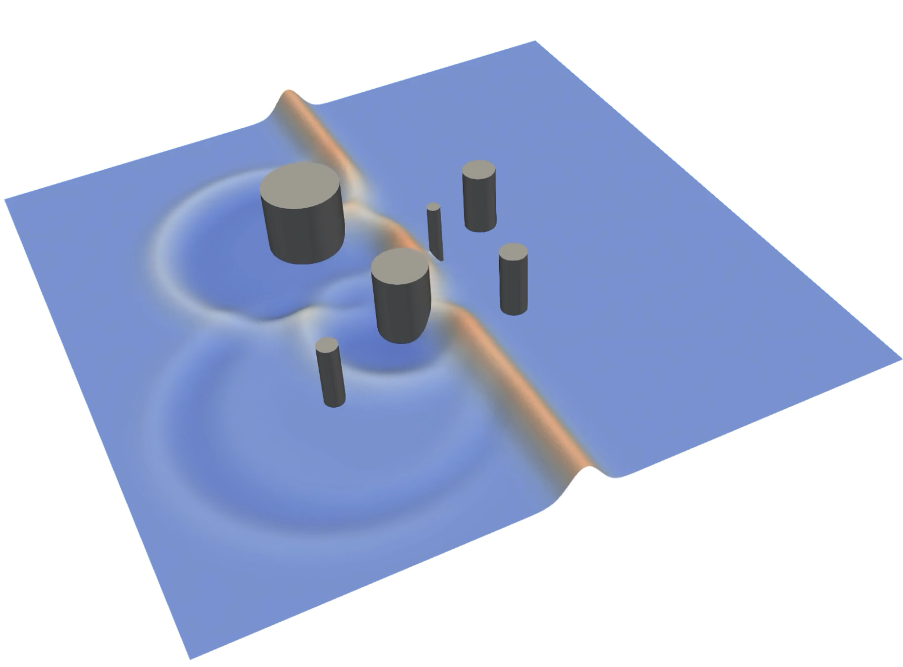
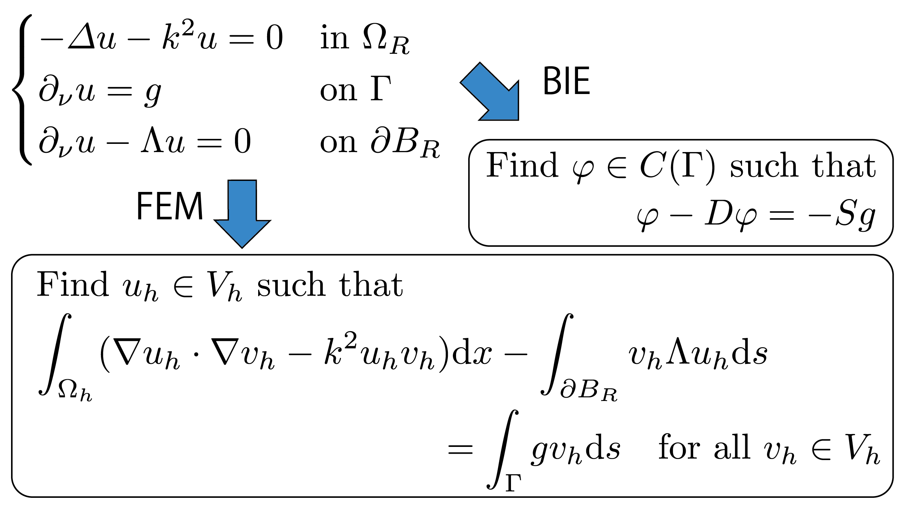
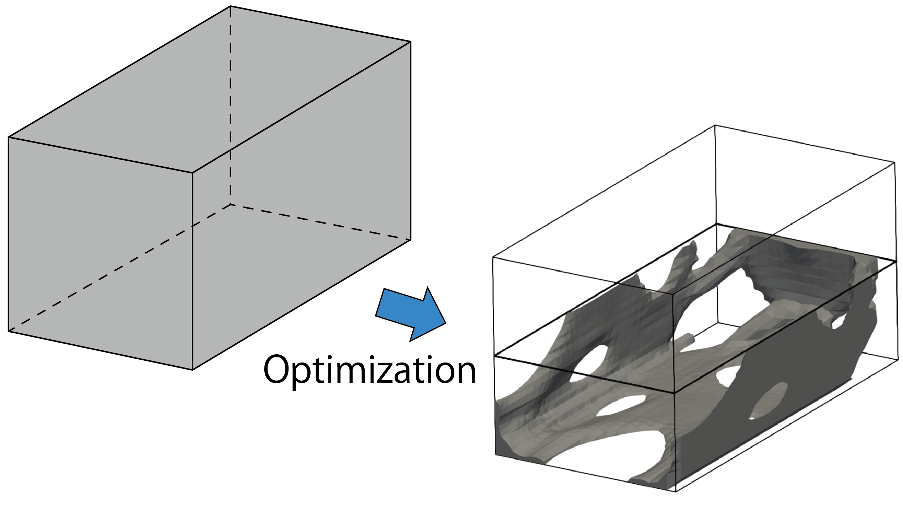

本研究室について
計算科学は科学技術の様々な問題を計算機により解明する学問です。本研究室は波動現象、特に音波・弾性波・電磁波を対象に、それらが関連する興味深い物理現象を計算科学と数理の力で探求する研究を行っています。
本研究室は広島大学 大学院先進理工系科学研究科 情報科学プログラムに所属しています。
News
研究テーマ

新奇な物理現象の探求
音波・弾性波・電磁波などの波動現象に潜む新奇な物理現象を、計算科学と数理モデルにより解明します。特に、物体の透明化や音響・電磁遮蔽、完全レンズなどを可能とする「メタマテリアル」とエネルギー散逸機構に由来する「非エルミート」現象に関する研究を中心に行っています。

数理モデリングと数値解析
解析対象を数学的モデルで表現する数理モデリングは計算科学の基盤です。本研究は偏微分方程式あるいは積分方程式による現象のモデリングと、その数値計算スキームの開発を行っています。

最適設計 (トポロジー最適化)
所望の物理特性を最大化・最小化する物体の形状を決定する「最適設計」は近年大きな注目を集めています。本研究室は最適化理論と偏微分方程式論に立脚する最適設計アルゴリズムの構築を行っています。
メンバー
- 助教：松島 慶
成果発表
共同研究・競争的資金・研究助成
お問い合わせ
〒739-8521 広島県東広島市鏡山1-7-1 総合科学部棟C
Email: info (at) acs.hiroshima-u.ac.jp